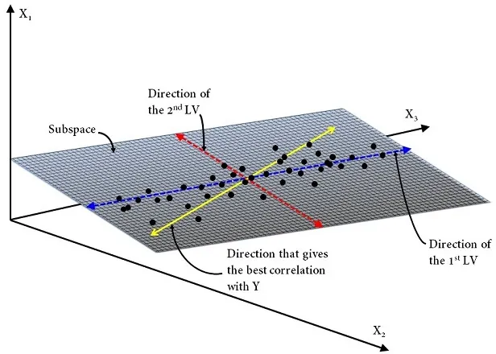
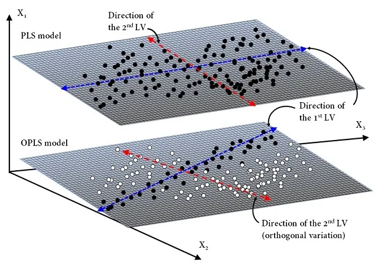
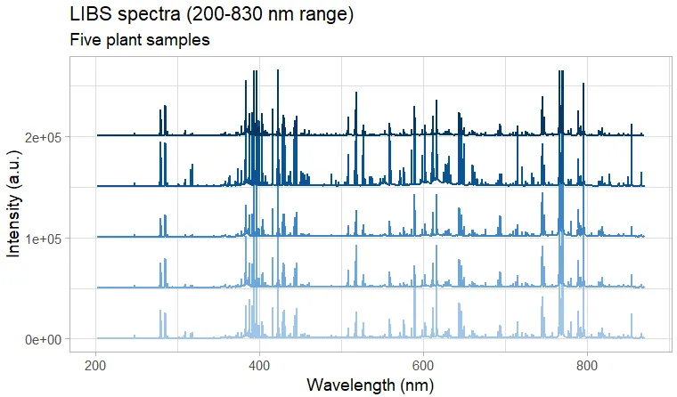
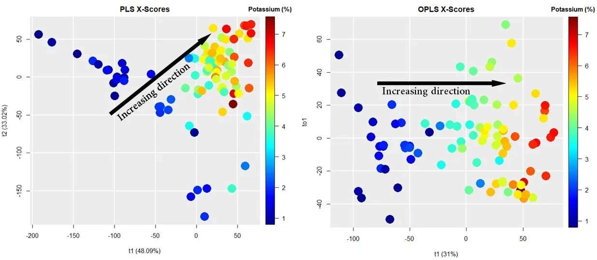

An Overview of Orthogonal Partial Least Squares
What is OPLS?
First and foremost, let me briefly recall that Partial Least Squares (PLS) regression is, without doubt,one of the most, or maybe the most, multivariate regression methods commonly used in chemometrics. In fact, PLS was originally developed around 1975 by Herman Wold for use in the field of econometrics and was later embraced in the 1980’s by prominent chemometricians such as Svante Wold — Herman Wold’s son, who in 1971 coined the term chemometrics to describe this emerging field of using advanced statistical and machine learning methods in analytical chemistry applications — , Harald Martens, Bruce Kowalski, Tormod Naes, and Paul Geladi, just to name a few. Over the past few decades, PLS — whether as a regression or classification method — has become very popular among chemometrics practitioners for dealing with multicollinearity in applications such as multivariate calibration and process analytical technology, where there are usually fewer observations (samples) than variables (wavelengths).
In 2002, Johan Trygg and Svante Wold introduced a variant of PLS in a paper entitled “Orthogonal projections to latent structures (O‐PLS)”. The new approach is a supervised multivariate data projection method used to relate a set of predictor variables \((X)\) to one or more responses \((Y)\).Basically, like PLS, O-PLS attempts to extract the maximum information reflecting the variation in the data set, while assuming the existence of a small subset of hidden variables in the \(X\)-data to predict the response variables. These subsets are formally called latent variables (or LVs) because they are unmeasurable. Historically, this concept of hidden structure in a data set is a century old and comes from methods such as Principal Component Analysis (PCA). The O-PLS method, as named by the authors, uses orthogonal signal correction previously developed by S. Wold — Chemometrics Intell. Lab. Syst., 1998, 44, 175 — to maximize the explained covariance on the first LV, while the remaining LVs capture variance in the predictors which is orthogonal, i.e. statistically uncorrelated to the response variables. To put it simply, this means that unlike PLS — which handle random noise fairly well — , the new method also known as Orthogonal Partial Least-Squares (OPLS) enables to filter out the structured noise in the data set by modeling separately variations of the \(X\)-predictors correlated and uncorrelated to the \(Y\)-responses. Ultimately, this reduces the model’s complexity by lowing the number of LVs, in addition to allowing identification, analysis and investigation of the main source of orthogonal variation.
Mathematical Framework
Let’s take a quick look at the mathematics behind OPLS. Herein we consider \(X\) as a matrix of size \(n \times p\) and \(Y\) as a matrix of size \(n\times m\), where \(p\)isthe number of predictor variables, \(m\) isthe number of response variables and, \(n\) is the number of observations. Recall that PLS has been developed with the aim of searching the direction of a certain number of LV — with the constraint of being orthogonal to each other — that meet the following criteria: (1) capture maximum variance in the \(X\)-space, (2) capture maximum variance in the \(Y\)-space and, (3) maximize correlation between the \(X\)- and \(Y\)-space.
A PLS model can be written as:
\[ \begin{align*} X =& TP^T + E \\ Y =& UC^T + F \\ T =& U + H \end{align*} \]
where \(T\) is the scores matrix summarizing variation in the \(X\)-predictors — i.e. similarities/differences between samples — , \(P\) is the loadings matrix — or often called the \(X\)‐loadings to distinguish it from the \(Y\)‐loadings — , \(U\) is the scores matrix that summarizes variation in the \(Y\)-responses, \(C\) is the \(Y\)‐loadings and, \(E\),\(F\),\(H\)arethe residual matrices. The superscript \("T"\) denotes the matrix transpose. Note that \(P\) expresses the correlation between \(X\) and \(U\), whilst \(C\) expresses the correlation between \(Y\) and \(T\).

OPLS model operates similarly to PLS model but separates the systematic variation in \(X\)into three parts: (1) a predictive part that is correlated to \(Y\), (2) an orthogonal part, “orth”, that is uncorrelated to \(Y\), (3) a noise part — residual variation.
Thus, an OPLS model can be formulated as:
\[ \begin{align*} X =& TP^T + T_{\text{orth}}P^T_{\text{orth}} + E \\ Y =& UC^T + F \end{align*} \]

It should be mentioned that in fact two different OPLS algorithms have been developed. The first algorithm, most frequently referred to as O1-PLS or simply OPLS, as described above is unidirectional \((X \implies Y)\), meaning that only orthogonal variations in the \(X\)-space are filtered out. The second algorithm, referred to as O2-PLS, is bi-directional \((X \iff Y)\), meaning that orthogonal variations in both the \(X\)- and \(Y\)-space are filtered out.
An O2-PLS model can be written as:
\[ \begin{align*} X =& TP^T + T_{\text{Y-orth}}P^T_{\text{Y-orth}} + E \\ Y =& UC^T + U_{\text{X-orth}}C^T_{\text{X-orth}} + F \end{align*} \]
O2-PLS separates \(X\) and \(Y\) into three parts: (1) a joint part (correlation between \(X\) and \(Y\)), (2) an orthogonal part — unrelated latent variation in \(X\) and \(Y\) separately— ,and (3) a noise part.
Example: LIBS spectra
For comparison purposes, I used the LIBS spectra of plant materials to predict the concentration of potassium using the PLS and OPLS approaches. PLS was performed using the R package caret. Since OPLS is not available in caret, I used the package ropls instead.

Figures below show the \(X\)-scores scatter plots (projection of the \(X\)-space) for PLS (left panel) and OPLS (right panel) modeling. In both figures, the \(x\)-axis represents the first component (or latent variable), whereas the \(y\)-axis represents the second component for PLS and the first orthogonal component for OPLS. The rainbow colors represent the concentration of potassium (K) in each sample, from 1% (dark blue) to 7% (dark red). As we can see, OPLS only requires one component to correlate variation in the samples with K concentration (see the black arrow).

Summary
So in summary, the most important thing to remember is that OPLS (or O2-PLS) offers a valuable preprocessing tool, and will help to generate more efficient predictive models, especially in situations where structured noise dominates.